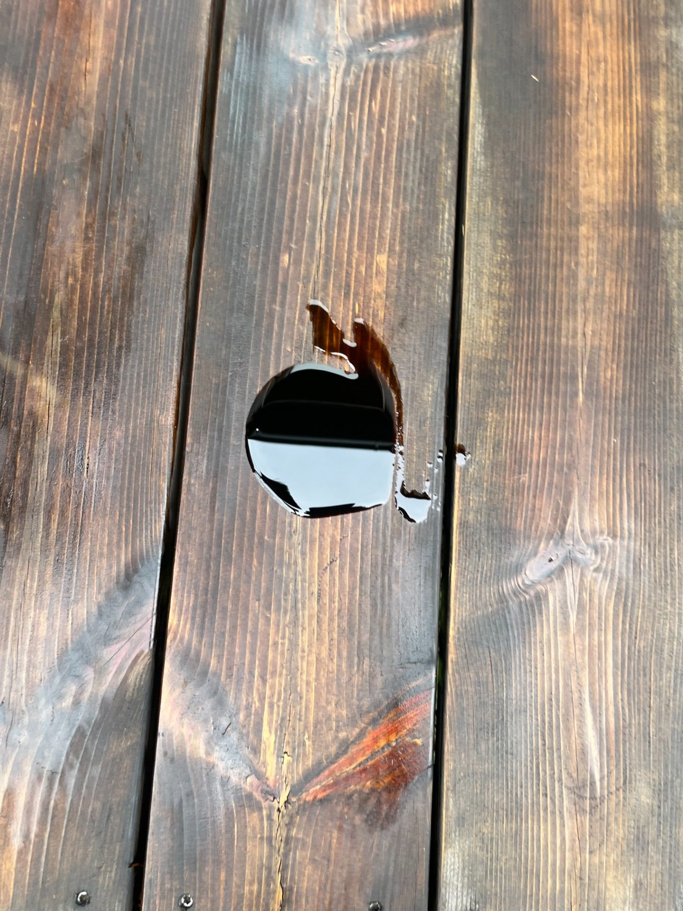
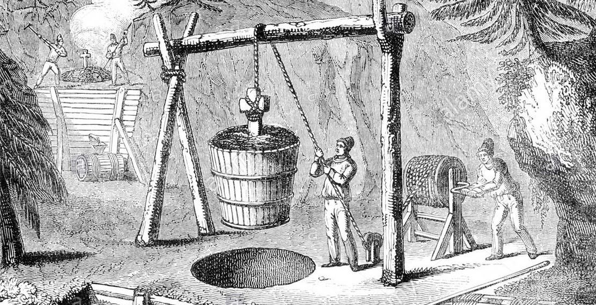
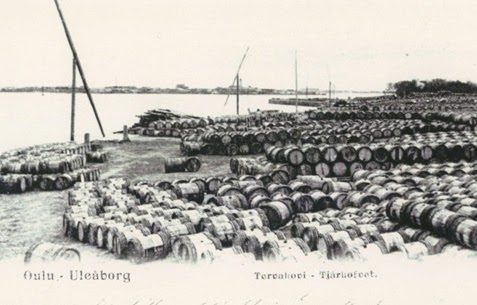
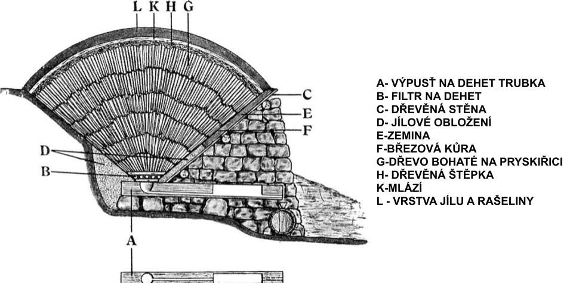
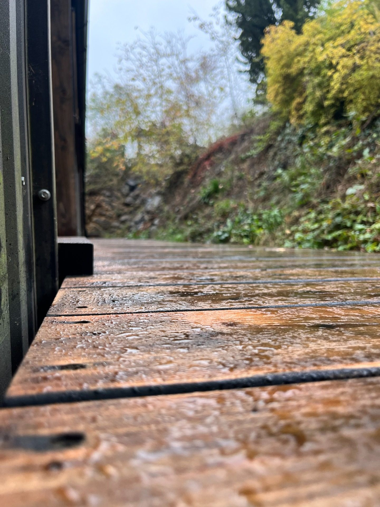
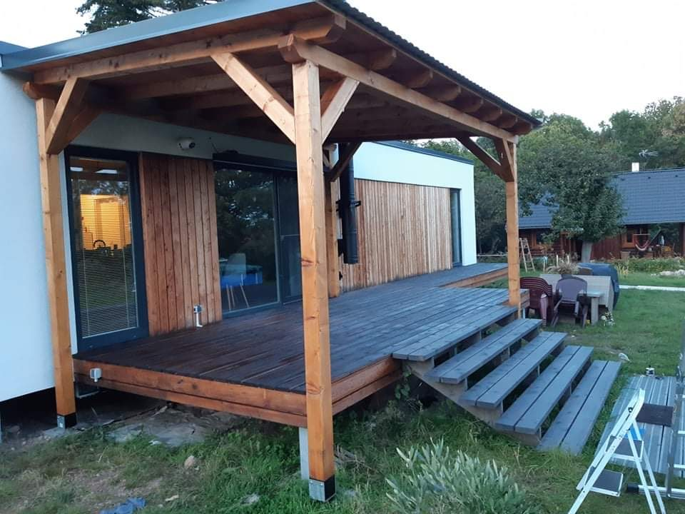
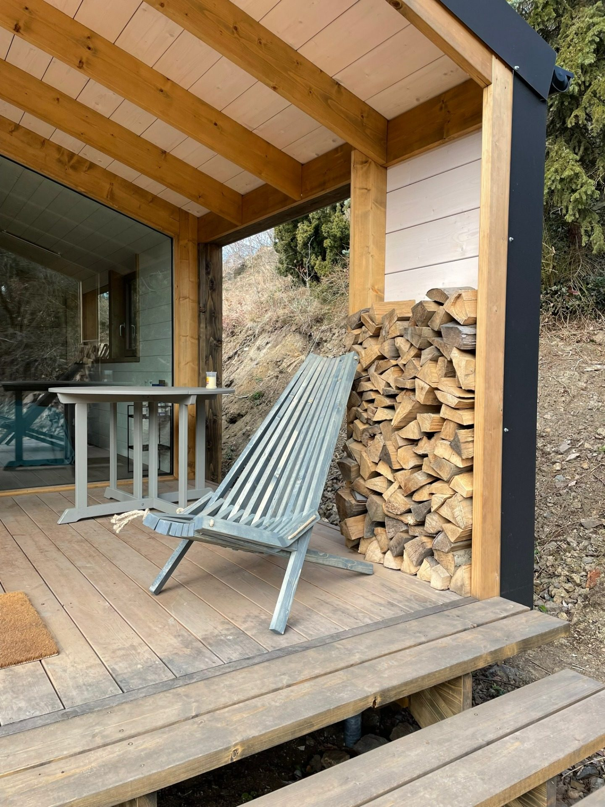

Olejový nátěr z borového dehtu podle tradiční švédské receptury. Na ploty, terasy, fasády a nábytek. V sedmi odstínech.
Běžná lazura nabídne barvu. PINNER nabídne barvu a zároveň dehet, který ve dřevě pracuje proti hnilobě, hmyzu a UV.
Olej vodu odpuzuje. Dehet navíc ve dřevě pracuje – biologicky, chemicky i fyzikálně. Šest látek, šest úloh.
| Fenolické sloučeniny | ničí houby, plísně a bakterie |
|---|---|
| Pryskyřičné kyseliny | hluboká hydrofobní impregnace, dřevo dál dýchá |
| Terpeny | odpuzují dřevokazný hmyz a larvy |
| Aromatické sloučeniny | pohlcují UV, zpomalují šednutí |
| Uhlíkové řetězce | nevymývají se, nezvětrávají |
| Původ ze dřeva | chemicky kompatibilní s buňkou dřeva |







Zadejte plochu a druh dřeva. Kalkulátor spočítá litry na dvě vrstvy.